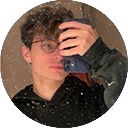

ABOUT ME
(chi c'è dietro al sito)
(chi c'è dietro al sito)

Sono Simone Bini e sono uno studente dell’istituto superiore IIS Blaise Pascal di Reggio Emilia dell'indirizzo Informatico. Attualmente ho 19 anni e frequento il 4° anno della scuola sopracitata.
Studio informatica e amo condividere la mia passione per la tecnologia e la programmazione con i giovani studenti e vederli crescere e sviluppare le loro competenze informatiche. Quando ne ho l'occasione insegno informatica a studenti più giovani di me, che sono spesso entusiasti e curiosi di imparare. Mi piace sfidare i loro pensieri e aiutarli a capire come la tecnologia può essere utilizzata per risolvere problemi e creare soluzioni innovative. Attualmente, oltre all'informatica, lavoro da diverso tempo presso la pizzeria del mio paese e devo dire che mi piace molto perchè mi aiuta sia a crescere moralmente, ma anche imparare a relazionarmi con gli altri in ambito lavorativo e a imparare nuove tecniche culinarie. Nella mia vita privata, sono un appassionato di videogiochi, amo trascorrere il mio tempo libero giocando con i miei amici e mi piace tenere sempre aggiornato sugli ultimi sviluppi e tendenze nel mio settore. Inoltre, sono anche un grande appassionato di musica e mi piace ascoltare diversi generi, dalla musica classica alla musica elettronica. Mi considero una persona determinata e sempre pronta a imparare cose nuove. Spero di poter continuare a crescere professionalmente e personalmente e di poter un giorno lavorare come sviluppatore di software o in un'altra posizione simile nell'ambito informatico.
Copyright © 2022 - Tutti i diritti riservati - Simone Bini
Powered by Bino